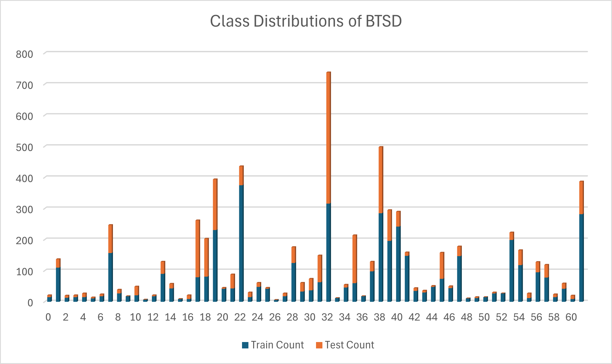
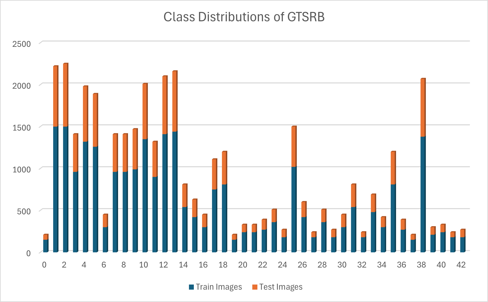

Kolmogorov-Arnold Networks (KANs) are an innovative type of deep neural network architecture based on the theorem of Kolmogorov-Arnold representation. KANs have demonstrated the potential to outperform Multi-Layer Perceptron (MLP) models regarding accuracy and interpretability in AI applications. Notably, the current research landscape lacks a comprehensive exploration of the robustness of KANs, particularly in the context of adversarial attacks and defenses. This paper aims to address this gap by evaluating the performance of various KAN architectures, such as KAN, MLP, KAN-Mixer, MLP-Mixer, KANConv_KAN, ConvNet_MLP, ConvNet_KAN, and KANConv_MLP models, against adversarial attacks. Additionally, the paper examines the effectiveness of adversarial training in enhancing model robustness. Experiments were conducted on three datasets for traffic sign classification: GTSRB, BTSD, and CTSD, covering different training scenarios, including standard training and adversarial training. Our results show that adversarial training significantly enhances the robustness of KAN-based models, particularly KAN-Mixer and MLP-Mixer, by reducing the success rates of adversarial attacks while maintaining high accuracy on clean data. hese findings underscore the potential of KAN methods to improve neural network security and reliability in adversarial attacks.
In contrast, the MLP model is a baseline comparison to the KAN architecture. The MLP consists of two fully connected hidden layers, identical in structure to the KAN model, with 256 units in the first layer and 128 units in the second layer. The activation function used in the MLP is ReLU, which is commonly used for its simplicity and computational efficiency.
These KANLinear layers are key to the model's flexibility. They use grid-based kernels with grid size = 5 and spline order = 3, scaled by 1.0. The grid is dynamically updated within a range of -1 to 1 using a grid eps of 0.02, enhancing adaptability to the data distribution. The activation function used in the KAN model is SiLU, which allows for smoother gradient flow during backpropagation. Regularization is enforced through adaptive B-splines, which helps control overfitting. Following the configuration outlined in Efficient KAN.
Both models' output layers consist of units corresponding to the number of classes in the datasets. For training, we used the AdamW optimizer with a learning rate of 0.001 and a weight decay of 1e-4, training over 100 epochs with a batch size of 64. The cross-entropy loss function was employed to evaluate classification performance.
BTSRB Dataset: The BTSD includes a total of 62 classes, categorized into three superclasses: mandatory, prohibitive, and danger classes. The dataset is divided into 4,591 training images and 2,534 test images, providing variety in sign appearances to assess model robustness, depicted in Figure.
 View Full ImageCTSRB Dataset: China's CTSD comprises 6,164 images in 58 categories, with 4,170 training images and 1,994 test images, offering a well-annotated dataset frequently used in traffic sign recognition research, illustrated in Figure.
 View Full Image
View Full Image
GTSRB Dataset: The GTSRB dataset, widely used to benchmark traffic sign classification models, contains 43 classes with 39,209 training images and 12,630 test images, offering a diverse representation of German traffic signs, as shown in Figure.
 View Full Image
Description: This image shows the KAN model's output when subjected to FGSM with epsilon = 0.1.
View Full Image
Description: The output indicates the model's ability to handle FGSM perturbations with increased intensity (epsilon = 0.2).
View Full ImageT-SNE was employed to visualize the latent space movement of clean and adversarial examples to further understand the impact of adversarial attacks and defense mechanisms. This visualization provides insights into how the internal feature representations of the models shift due to adversarial perturbations. Clean and attacked data points are projected into 2D space using t-SNE, and the movement between clean and adversarial versions is shown using lines.
Description: This image shows the results of a projected gradient descent attack with 40 iterations on the KAN model.
View Full Image
Description: Demonstration of how iterative attacks affect the classification accuracy of KAN (iterations = 50, epsilon = 0.3).
View Full ImageThe PGD attack results demonstrate the effectiveness of KAN in defending against iterative adversarial attacks.
Description: BIM attack with step size=0.01 and iterations=100 on KAN model.
View Full Image
Description: Increased intensity of BIM attack to assess KAN model's robustness.
View Full ImageBIM attack results highlight the KAN model's ability to withstand gradient-based iterative attacks.
Description: The CW attack showcases targeted misclassification with minimal perturbation on KAN model.
View Full Image
Description: Evaluating CW attack's impact on different class targets within the KAN model.
View Full ImageThe CW attack results indicate potential vulnerabilities and resilience points in the KAN model's structure.

The Multi-Layer Perceptron (MLP) is a fully connected feedforward neural network. It serves as a baseline architecture to evaluate the robustness of simpler neural networks when faced with adversarial examples.
BTSRB Dataset: The BTSD includes a total of 62 classes, categorized into three superclasses: mandatory, prohibitive, and danger classes. The dataset is divided into 4,591 training images and 2,534 test images, providing variety in sign appearances to assess model robustness, depicted in Figure.
View Full ImageCTSRB Dataset: China's CTSD comprises 6,164 images in 58 categories, with 4,170 training images and 1,994 test images, offering a well-annotated dataset frequently used in traffic sign recognition research, illustrated in Figure.
View Full Image
GTSRB Dataset: The GTSRB dataset, widely used to benchmark traffic sign classification models, contains 43 classes with 39,209 training images and 12,630 test images, offering a diverse representation of German traffic signs, as shown in Figure.
View Full Image
Description: This image shows the MLP model's output when subjected to FGSM with epsilon = 0.1.
View Full Image
Description: The output indicates the MLP model's ability to handle FGSM perturbations with increased intensity (epsilon = 0.2).
View Full ImageT-SNE visualization provides insights into how the MLP model's internal feature representations shift due to FGSM adversarial perturbations.
Description: MLP's output after being attacked with PGD at 30 iterations with epsilon = 0.3.
View Full Image
Description: The model's resilience is tested further with 50 PGD iterations and an increased epsilon value.
View Full ImagePGD attack results show the iterative nature of the attack impacts the MLP model's classification accuracy and robustness.
Description: The MLP model is subjected to the CW attack, aiming for targeted misclassification with minimal perturbation.
View Full Image
Description: Evaluating the CW attack's impact on different class targets within the MLP model.
View Full ImageThe CW attack demonstrates both the vulnerabilities and possible strengths of the MLP model in facing sophisticated adversarial attempts.
The Convolutional Neural Network (CNN) model is widely used in image classification tasks. This model is evaluated for its robustness against adversarial examples like FGSM, PGD, and CW, focusing on its convolutional layers' ability to resist perturbations.
BTSRB Dataset: The BTSD includes a total of 62 classes, categorized into three superclasses: mandatory, prohibitive, and danger classes. The dataset is divided into 4,591 training images and 2,534 test images, providing variety in sign appearances to assess model robustness, depicted in Figure.
View Full ImageCTSRB Dataset: China's CTSD comprises 6,164 images in 58 categories, with 4,170 training images and 1,994 test images, offering a well-annotated dataset frequently used in traffic sign recognition research, illustrated in Figure.
View Full Image
GTSRB Dataset: The GTSRB dataset, widely used to benchmark traffic sign classification models, contains 43 classes with 39,209 training images and 12,630 test images, offering a diverse representation of German traffic signs, as shown in Figure.
View Full Image
Description: This image showcases the CNN model's response to FGSM with epsilon = 0.1.
View Full Image
Description: Illustration of the CNN's classification when exposed to a higher epsilon value of 0.2 under FGSM attack.
View Full ImageT-SNE was employed to visualize the latent space movement of clean and adversarial examples to further understand the impact of adversarial attacks and defense mechanisms. This visualization provides insights into how the internal feature representations of the models shift due to adversarial perturbations. Clean and attacked data points are projected into 2D space using t-SNE, and the movement between clean and adversarial versions is shown using lines.
Description: CNN's output after being attacked with PGD at 30 iterations with epsilon = 0.3.
View Full Image
Description: The model's resilience is tested further with 50 PGD iterations and an increased epsilon value.
View Full ImagePGD attack results show how the iterative nature of the attack impacts the CNN model's classification accuracy and robustness.
Description: The CNN model is subjected to the CW attack, aiming for targeted misclassification with minimal perturbation.
View Full Image
Description: Evaluating the CW attack's impact on different class targets within the CNN model.
View Full ImageThe CW attack demonstrates both the vulnerabilities and possible strengths of the CNN in facing sophisticated adversarial attempts.
{kind=link}
{kind=link}